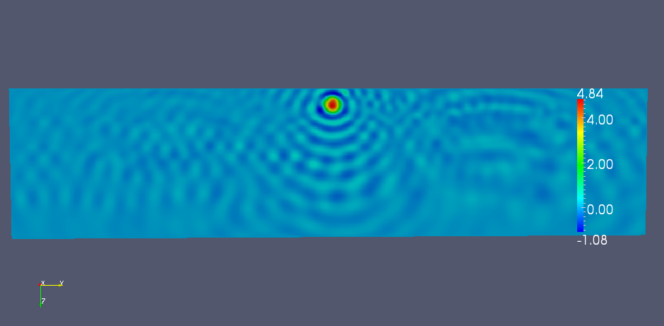
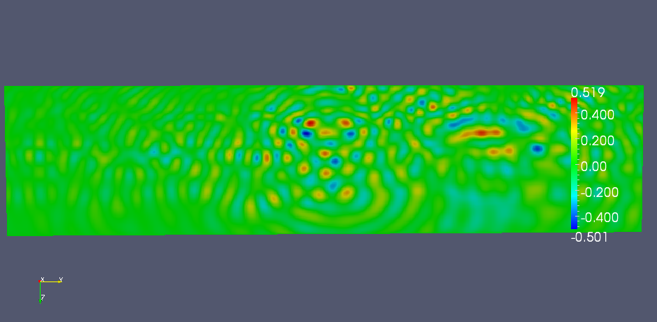
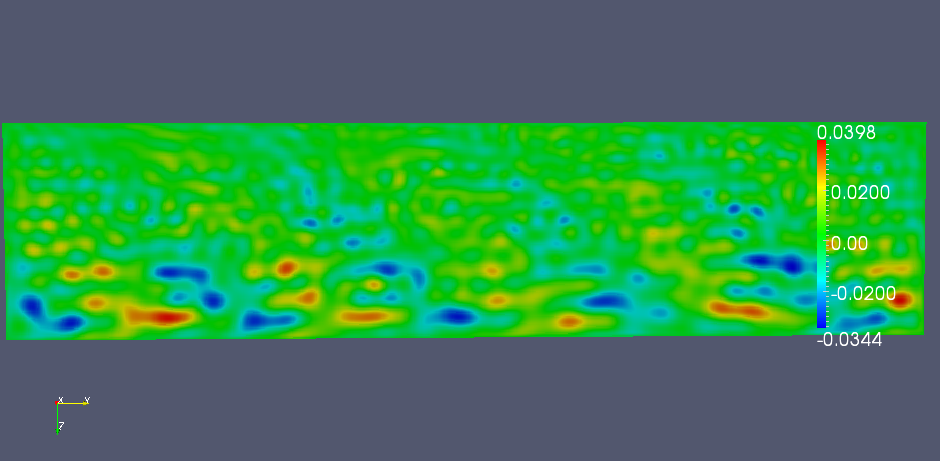

Example driver(s)¶
Overthrust¶

TODO: Describe ``examples/Overthrust.cpp``
Example usage
Overthrust --nx 801 --ny 801 --nz 187 --omega 50.27 --sigma 24 --fullViz 1
- nx, ny, nz: size of grid in each dimension
- omega: frequency (in rad/sec) of the problem
- px, py, pz: 3D process grid dimensions
- pmlOnTop: PML if nonzero, Dirichlet otherwise (default is true)
- pmlSize: number of grid points per PML boundary condition (default is 5)
- sigma: magnitude of complex coordinate stretching for PML (default is 35)
- damping: imaginary frequency shift for preconditioner (default is 7)
- planesPerPanel: number of planes per subdomain (default is 4)
- panelScheme: traditional approach if zero, selective inversion if 1 (default is 1)
- fullViz: full volume visualization if nonzero (default is false)
- factBlocksize: algorithmic blocksize for factorization (default is 96)
- solveBlocksize: algorithmic blocksize for solves (default is 64)
Eight Hz example¶
This example shows the Overthrust model solved at its native resolution (\(801 \times 801 \times 187\)) at a frequency of 8 Hz in order to ensure that there are slightly more than 10 points per wavelength at the shortest wavelength. The command used was:
Overthrust --nx 801 --ny 801 --nz 187 --omega 50.26 --px 16 --py 16 --pz 8 --sigma 7.5 --damping 7.07 --fullViz 1
and all four residuals converged to five digits of relative accuracy in 72 iterations of GMRES(20) on 256 nodes of Lonestar (using eight cores per node, in roughly seven and a half minutes, including the preconditioner setup time).

The middle YZ plane of the single-shot solution.
The middle YZ plane of the three-shot solution.
An off-center YZ plane (x=0.55*20) of the three-shot solution.
The middle YZ plane of the plane wave solution.